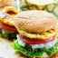
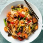
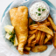
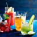

Burgers Ahouy!
Burgers
American
Pizza Palpatha
Italian
American
Pizza
Bathui Pol Sambolai
Rice
Sri Lankan
The Impasta
Pasta
Italian
Chinese

Thai Tanic
Soup
Salad
Thai
Pita Pan
Burgers
Mediterrenean

Hoppers and Betrayals
Hoppers
Sri Lankan
Indian
Cutie Pies and Cupcakes
Cupcakes
Sweet
Sour
Tikka-k Inta
Paratha
Indian

The Codfather
Chips
Fried Fish
American

The Tipsy Cow
Cocktails
Smoothies
Juice
The Diary Godmother
Dairy
Milk
Smoothies